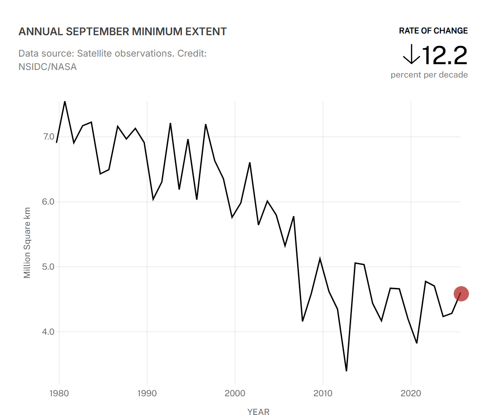
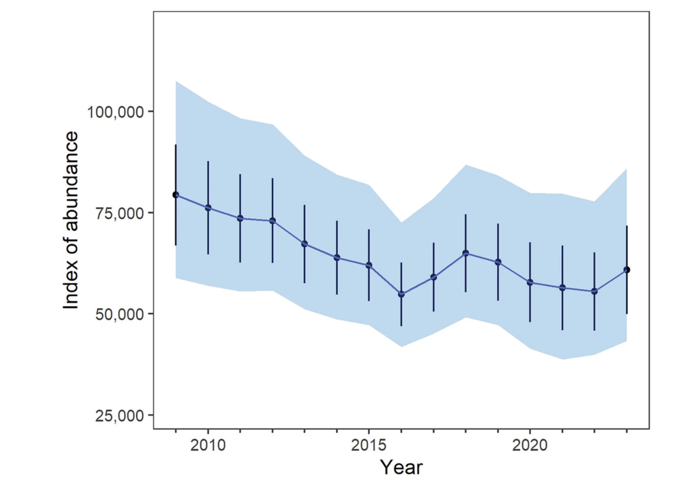
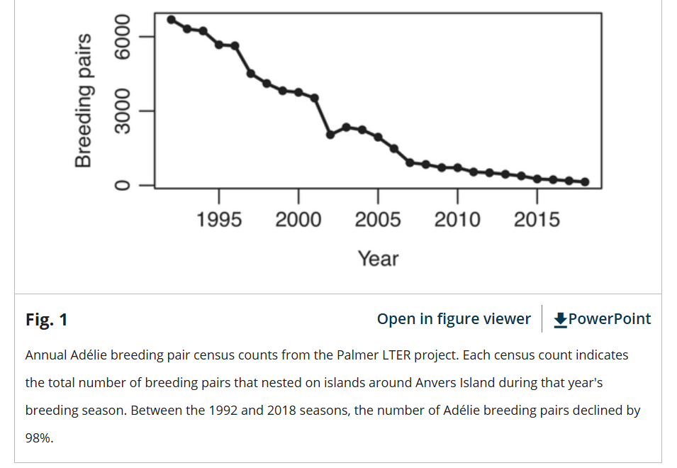
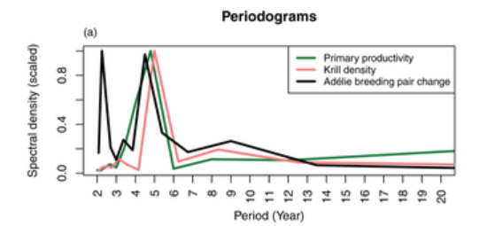
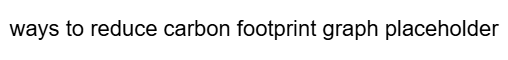

Due to a rise in anthropogenic greenhouse gas emissions, the average global temperature has increased to 1.44 ± 0.9 °C above pre-industrial levels as of 2025, which has severely harmed biodiversity and natural health worldwide. In a phenomenon known as the greenhouse effect, greenhouse gases such as carbon dioxide (CO2) and methane (CH4) trap heat in the atmosphere; as a result, heat in the air accumulates over time, leading to an increase in global temperatures known as global warming or climate change. Global warming already threatens over 14,000 species around the world, and it damages many marine ecosystems by contributing to a large decrease in the coral population, harming the species that provides shelter to over a quarter of ocean life. Because Antarctica is primarily composed of ice, climate change has especially harmed the continent and its inhabitants.
scrollytelling check
Antarctic sea ice minimum extent over time (graph, would be a good one to make interactive and allow users to predict trend), explain what minimum extent is, why it’s decreasing by year, talk about species living in Antarctica and the effects sea ice shrinkage could have on them, transition into main focus being on effects of climate change on two Antarctic penguin species (Emperor and Adelie) due to two main reasons (shrinking of sea ice and prey shortages)
scrollytelling check

Body Paragraph 1 - emperor penguin and sea ice - explain how sea ice shrinkage makes it more difficult for emperor penguins to raise chicks because they raise chicks on fast ice and have to breed once a year, explain what fast ice is, explain the link between sea ice decline, fast ice decline, low chick survival rates, and decline of population, show graph of population decline (maybe the abundance index from nature.com article)
scrollytelling check

Body Paragraph 2 - Adelie penguin and prey shortages - explain adelie penguins eat krill, explain how climate change offsets krill cycles, identify root cause for lack of krill availability (may link with sea ice decline as well!), may need to explain what primary productivity is, can use any graph from the cyclical prey shortages paper (use line graph with both krill availability and breeding pairs, maybe use line graph with just breeding pairs as well)
scrollytelling check


Conclusion - summarize thesis and add some info from rest of article, talk about steps reader can take to reduce their carbon footprint and other steps to help penguins (ex. spreading awareness)
Concluding sentence (talk about benefits of reducing carbon footprint, penguins and otherwise)
scrollytelling check
